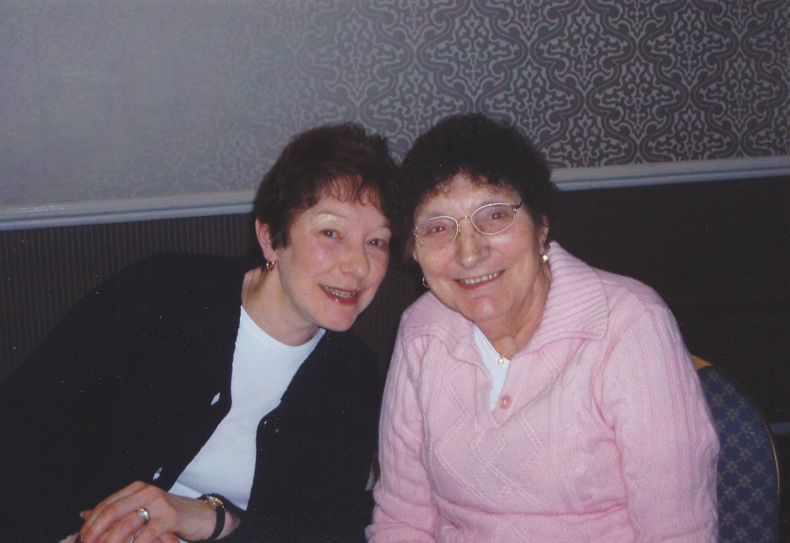

"No false promises, no add-ons, fantastic support when I was deciding"
Connie runs our Norwich territory. She chose franchising as a way to start a business because of the support you get. Connie chose Diamond Home Support because there was “no false promises, no add-ons and fantastic support from the start.”
Connie has found the support from the franchisor to be “invaluable”, but has also been a source of great inspiration and support herself to other franchisees within the network.
Connie has seen excellent growth within her business and is ahead of the business projections. She realises however that this hasn’t happened by accident.
“Don’t expect everything to drop into your lap – put 110% in, get 110% back!! You need to look after your workers and your clients!”
When asked about the benefits of her business Connie told us, “I like working from home, enjoying my job and talking to workers and clients. I also enjoy providing a service to the general public to make life easier.”
It is Connie’s diligent approach to running her business and her communication skills which have really allowed her business to flourish. Connie told us that anyone joining the business would get good advice from the franchise network to help them flourish too.
Find out more about our cleaning franchise business and understand the earning potential. If you haven’t already, why not request a copy of our prospectus. Or find out more about some of our other franchisees.
If you want to find out if we offer services in your area visit out local office page for a full list of our offices around the UK.
Connie - Diamond Home Support Norwich, Great Yarmouth and Waveney
